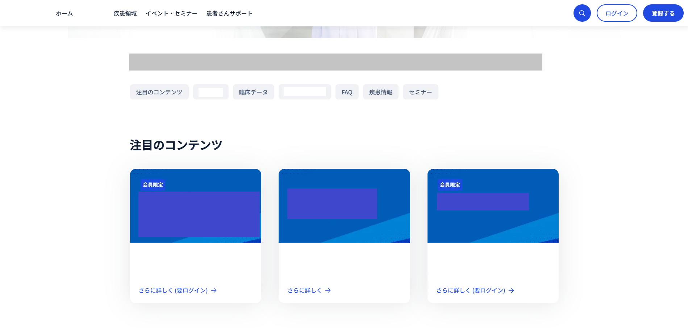
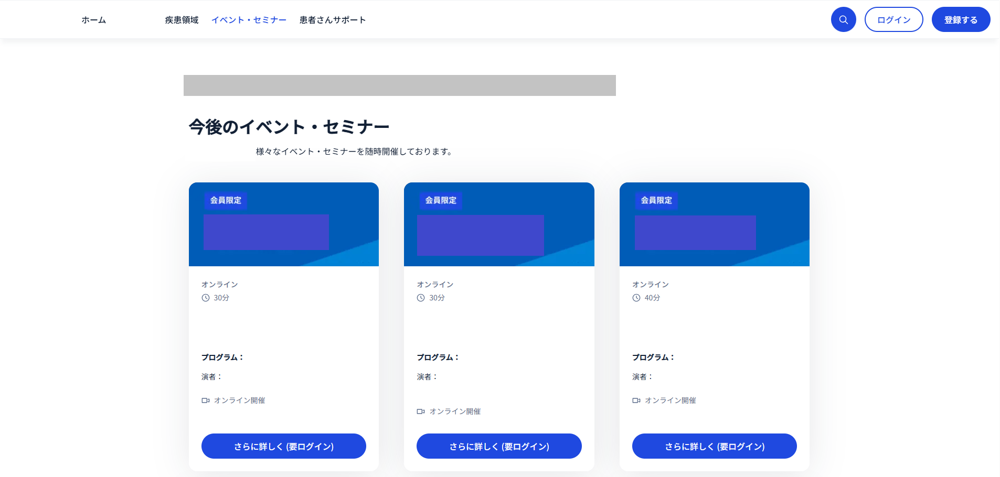

生成AI・業務自動化
現場へのヒアリングで「何に時間がかかっているか」を把握し、適切なテーマをPoCへ。業務フローのガイドラインで、業務知識のない開発メンバーでも手戻りなく開発できる体制をつくります。
- Azure OpenAI
- Copilot
- Claude
- PoC
- Python
現場へのヒアリングで「何に時間がかかっているか」を把握し、適切なテーマをPoCへ。業務フローのガイドラインで、業務知識のない開発メンバーでも手戻りなく開発できる体制をつくります。
計画策定、タスク割り振り、進捗・課題管理。作業を可視化し関係者の認識を揃えることで、プロジェクトをスケジュール通りに完遂します。
AEM・独自CMSで大手製薬会社のサイトを7年以上運用。要件整理から制作、CMS移行、多デバイスでの品質管理まで担当してきました。
生成AI・自動化、Web運用、QAにわたる6つのプロジェクトから、代表的な3件をご紹介します。
生成AIおよび業務自動化技術を活用し、社内業務の効率化を目的としたPoC・システム化を推進。残業代計算、実績データ集計、銀行取引データの自動仕訳などのテーマに取り組んでいます。
詳しく見る
大手製薬企業の既存Webサイト7件および新規サイトを新CMSへ移行。ホームページ・LP・ウェビナー・製品ページなどの新規構築も担当しました。
詳しく見る
大手製薬会社のブランドサイト（21サイト）のコンテンツ制作・更新・運用ディレクション。コーポレート・製品・患者サポートページなどを担当し、後半はリーダーとして運用を統括しました。
詳しく見る製薬企業クライアントの製品情報、疾患領域、イベント、患者サポートページ。




守秘義務の関係上、クライアント名・製品名・機密情報は非表示または加工しております。掲載画面はサイト構造・レイアウト・担当範囲を示す目的で掲載しています。